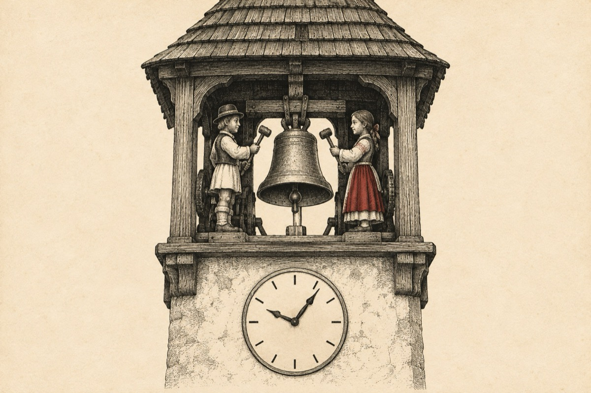

Ceasul din turn
Tre’ să fii chiar un nebun
Să te urci la ceas în turn
Când pe jos tu te găsești
Și poți lesne să-l privești
Te-amuză ora exactă
Că ies în turn să se bată
Un băiat și cu o fată
Ce-și dau în cap cu-o lopată?
Cu-o lopată sau ciocan
Ceas de ceas, an după an
Și-s forțați ca să se bată
Pentru-a da ora exactă?
De vrei să te cred nebun
Urcă-te și tu în turn
Când se dă ora exactă
Să vezi cum o să te bată.
Eu stau jos și te privesc
Cum cei doi te ciomăgesc.
Ți-am spus că ești un nebun
Ai un ochi umflat de-un pumn
Ce-ai cătat mă rog în turn
Te-ai îndrăgostit de fată?...
Să te-nveți minte odată!...
Vasile Groza
Apare și în: Copile sau Cartea copiilor, Poezii cu animale.